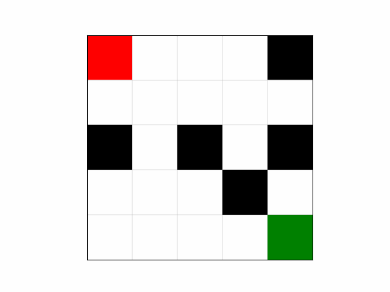

Optimizing path planning for competitors in custom pursuer- evader game by deciding actions with a minimax algorithm that uses alpha-beta pruning in Python
Competitive Path Planning
01 — OVERVIEW
02 — LEARNING GOALS
- What is minimax? What is alpha-beta pruning? What are its applications beyond game theory?
- What are the ties between graph theory and computational efficiency?
03 — MEDIA

04 — REFLECTION
A major issue within this project was a gap in understanding of what alpha-beta pruning really is. We were lost in the software while implementing concepts we did not truly know. It was only the day before deliverables were due where I sat down and relearned everything from a purely mathematical standpoint that I knew how to move forward with our stump. I also had the most fun during this period, which surprised me. Instead of being frustrated by a lack of progress, I saw a potential to challenge myself and tackle the unknown. This was one of many green lights that indicated to me that research was of great interest to me. I finally understood that AB pruning is a search algorithm. It traverses a known tree recursively to give a final compromised value between max and min possible heuristic values. It does not traverse the tree while building it. Yet, it still optimizes minimax because every single branch and node do not need to be compared. Instead, evaluation is cut off whenever alpha is greater than or equal to the beta threshold.
Aside from making the game more complex and interesting by adding corner moves, heuristics, and concurrency, I would also implement singular extensions in the future, in which search depth is extended when a shallow search shows one move leading to a wide margin, allowing the algorithm to follow critical lines. This would reflect the program used b y Deep Blue, the IBM supercomputer that beat the then- reigning Chess champion Garry Kasparov in 1997.
05 — FOCUS AREA